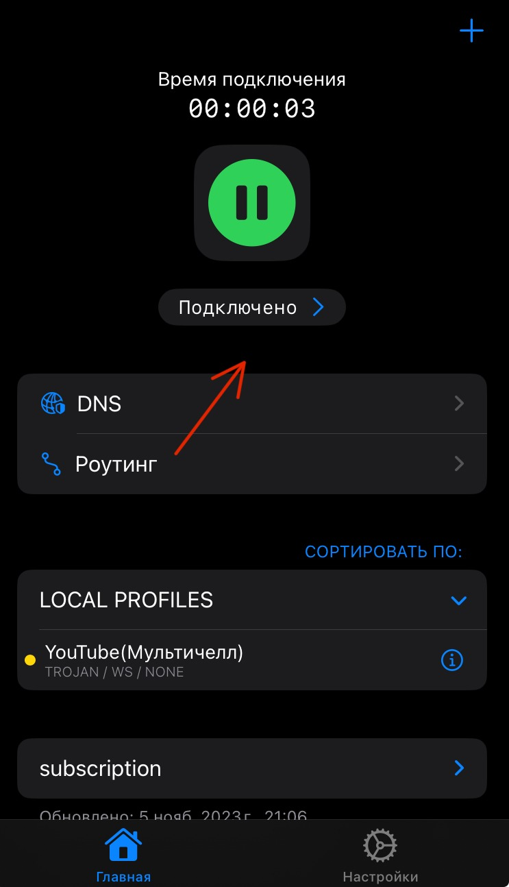

Инструкция для IOS
Следуйте этим шагам, чтобы настроить VPN:
- Скопируйте ваш VPN-ключ из Telegram-бота.
 скачайте приложение
скачайте приложение
- Откройте приложение V2rayTun.
Если его нет — установите через App Store. - Нажмите на значок плюса в правом верхнем углуи выберите опцию «Добавить из буфера».
- После добавления ключа нажмите кнопку подключения, чтобы начать пользоваться VPN. 